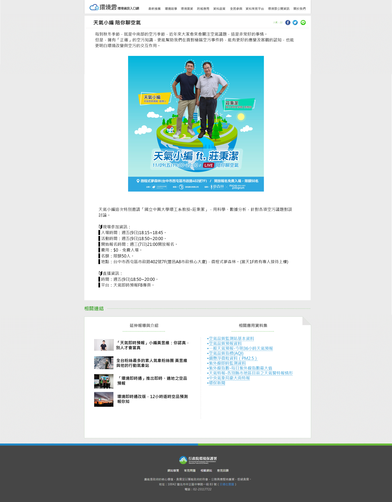

<map name="map">
            
    <area shape="rect" coords="298, 1560, 681, 1622" href="https://dsdpdemo.github.io/11"
            alt="相關連結1" 
            title="相關連結1" />
        <area shape="rect" coords="1019, 74, 1073, 122" href="https://social-plugins.line.me/lineit/share?url=https://dsdpdemo.github.io/2/"
            alt="line分享" 
            title="line分享" />
    <area shape="rect" coords="282, 3, 518, 57" href="https://dsdpdemo.github.io/%E5%85%A5%E5%8F%A3%E9%A0%81/"
            alt="入口頁" 
            title="入口頁" />
</map>
<script src="../jquery-1.10.2.min.js"></script>
<script src="../imageMapResizer.js"></script>
<script>$(document).ready(function(e){$("map").imageMapResize();});</script>
